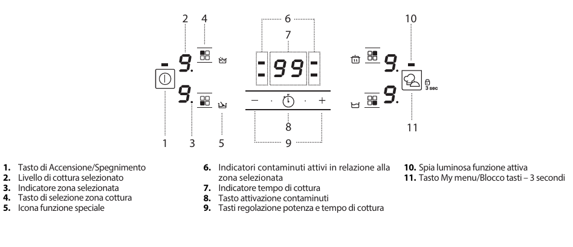

Instrucciones de inducción
Seguridad
- No utilice la placa de cocción si la superficie está agrietada.
- No coloque objetos en las zonas de cocción.
- Supervise siempre el proceso de cocción, especialmente con grasas y aceites.
- Mantenga a los niños alejados de la placa de cocción.
Encendido y apagado
- Para encender: presione el botón de encendido durante aproximadamente 1 segundo.
- Para apagar: presione el mismo botón; todas las zonas de cocción se desactivarán. 
Uso diario
- Selección de la zona de cocción: presione el botón de selección de la zona correspondiente.
- Ajuste de potencia: use los botones + y - para ajustar el nivel de potencia de 1 a 9.
- Booster: algunas zonas de cocción cuentan con una función de calentamiento rápido (Booster), indicada con la letra P.
- Desactivación: para desactivar una zona de cocción, selecciónela y presione - hasta llevar el nivel a 0.

Bloqueo de teclas
- Presione durante 3 segundos el botón My menu/Bloqueo de teclas para bloquear los botones y evitar activaciones accidentales. Para desactivar, repita el procedimiento.
Temporizador
- Seleccione y active la zona de cocción deseada, luego presione el icono del reloj e introduzca el tiempo usando los botones + y -. El temporizador comenzará la cuenta regresiva y apagará automáticamente la zona de cocción cuando termine el tiempo.
Si encuentra algún problema, contacte con el anfitrión, Alessandro.